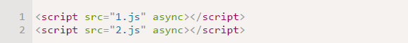
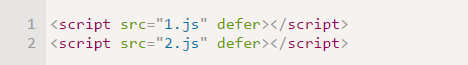

Привет, Javascript!
First lesson
Ещё немного о скриптах
Браузер загружает и отображает HTML постепенно. Особенно это заметно при медленном интернет-соединении: браузер не ждёт, пока страница загрузится целиком, а показывает ту часть, которую успел загрузить.
Если браузер видит тег script, то он по стандарту обязан сначала выполнить его, а потом показать оставшуюся часть страницы.
Такое поведение называют «синхронным». Как правило, оно вполне нормально, но есть важное следствие.
Если скрипт – внешний, то пока браузер не выполнит его, он не покажет часть страницы под ним.
То есть, в таком документе, пока не загрузится и не выполнится big.js, содержимое body будет скрыто
Кардинально решить эту проблему помогут атрибуты async или defer:
Атрибут async
Поддерживается всеми браузерами, кроме IE9-. Скрипт выполняется полностью асинхронно. То есть, при обнаружении script async src="..." браузер не останавливает обработку страницы, а спокойно работает дальше. Когда скрипт будет загружен – он выполнится. То есть, в таком коде (с async) первым сработает тот скрипт, который раньше загрузится:

Атрибут defer
Поддерживается всеми браузерами, включая самые старые IE. Скрипт также выполняется асинхронно, не заставляет ждать страницу, но есть два отличия от async.
Первое – браузер гарантирует, что относительный порядок скриптов с defer будет сохранён. В коде (с defer) первым сработает всегда 1.js, а скрипт 2.js, даже если загрузился раньше, будет его ждать.
